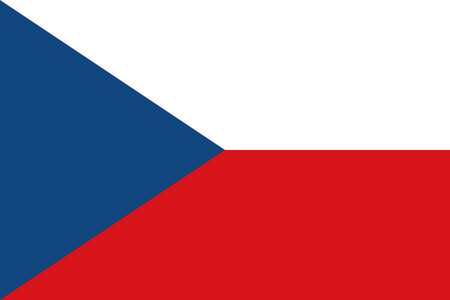
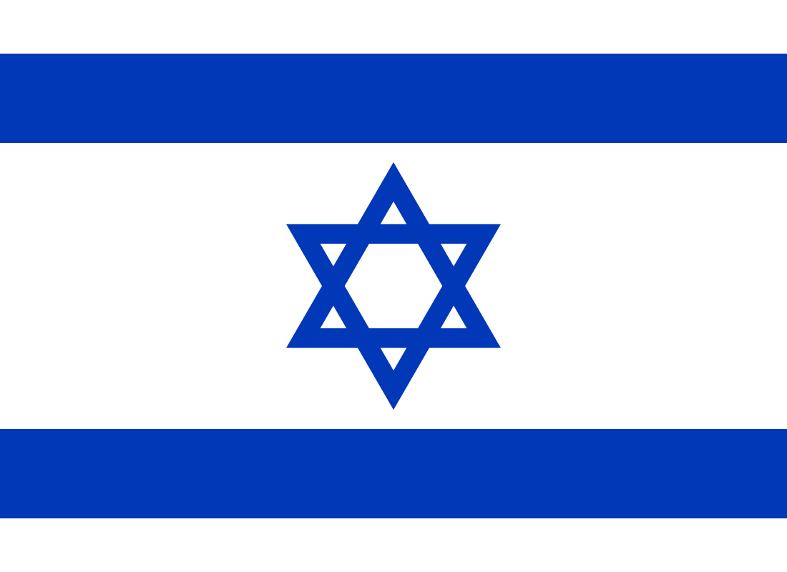
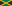
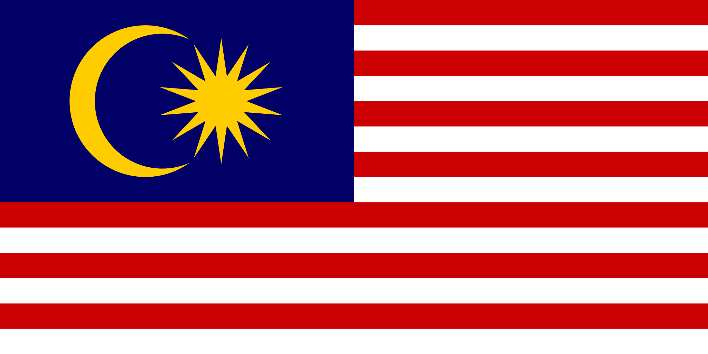
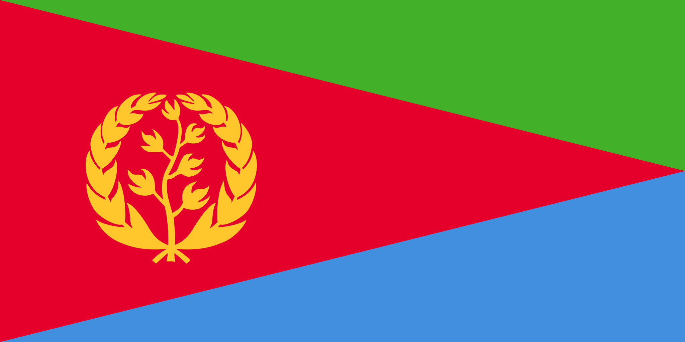
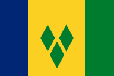
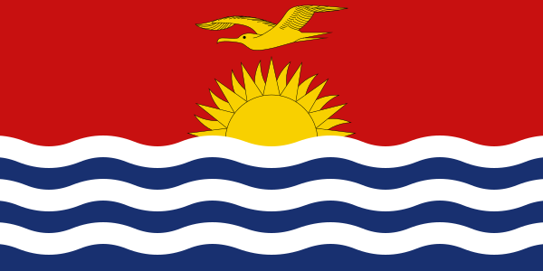
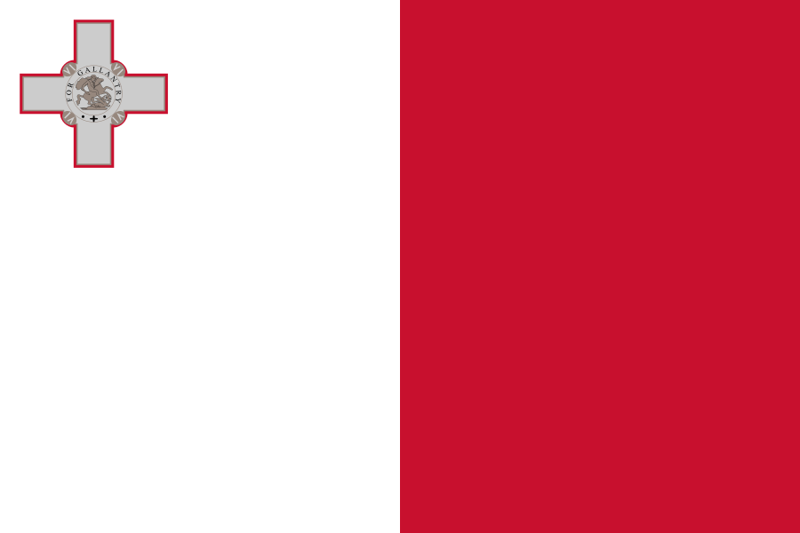

Question 101Completed result
Country (revealed after completion)
China
Currency🟩 Independent
Your answer: YwanCurrent currency: Chinese Yuan (CNY)
Attempts: Ywan
'Ywan' accepted as obvious phonetic spelling of Yuan; Independent +1.
Edition 1 · Q101–Q110 · all 10 graded
| Score | Currencies |
|---|---|
| Pure | 7/10 |
| Pure + Assisted | 7/10 |
| Independent | 7 |
| Assisted | 0 |
| Wrong | 3 |
| Cancelled | 0 |
| Score | Currencies |
|---|---|
| Pure | 76/109 |
| Pure + Assisted | 79.5/109 |
| Independent | 76 |
| Assisted | 7 |
| Wrong | 26 |
| Cancelled | 1 |
Original flags, every attempt, correct current currencies and country names revealed after the completed batch. Q57 remains cancelled for an earlier unfair flag and is excluded from the cumulative scored denominator.
Attempts: Ywan
'Ywan' accepted as obvious phonetic spelling of Yuan; Independent +1.

Attempts: Euro → don't know
Euro then explicit don't know; Wrong.
Attempts: Krone
'Krone' accepted as spelling/family variant of Icelandic Króna; Independent +1.

Attempts: Shikel
'Shikel' accepted as phonetic spelling of Shekel; Independent +1.

Attempts: Dollar
Correct first attempt, full Independent +1.

Attempts: Dollar → Pound → don't know
Dollar -> Pound -> explicit don't know; Wrong.

Attempts: Dollar → Pound → Franc → don't know
Dollar -> Pound -> Franc -> explicit don't know; Wrong.

Attempts: Dollar
Correct first attempt, full Independent +1.

Attempts: Dollar
Correct first attempt, full Independent +1.

Attempts: Euro
Correct first attempt, full Independent +1.
| Q | Flag | Correct Country | First Answer | Final Answer | Correct Currency + ISO | Result |
|---|---|---|---|---|---|---|
| 101 | China | Ywan | Ywan | Chinese Yuan (CNY) | 🟩 Independent | |
| 102 | Czech Republic | Euro | don't know | Czech Koruna (CZK) | 🟥 Wrong | |
| 103 | Iceland | Krone | Krone | Icelandic Króna (ISK) | 🟩 Independent | |
| 104 | Occupied Palestine | Shikel | Shikel | New shekel (ILS) | 🟩 Independent | |
| 105 | Jamaica | Dollar | Dollar | Jamaican Dollar (JMD) | 🟩 Independent | |
| 106 | Malaysia | Dollar | don't know | Malaysian Ringgit (MYR) | 🟥 Wrong | |
| 107 | Eritrea | Dollar | don't know | Eritrean Nakfa (ERN) | 🟥 Wrong | |
| 108 | Saint Vincent and the Grenadines | Dollar | Dollar | East Caribbean Dollar (XCD) | 🟩 Independent | |
| 109 | Kiribati | Dollar | Dollar | Australian Dollar (AUD) | 🟩 Independent | |
| 110 | Malta | Euro | Euro | Euro (EUR) | 🟩 Independent |
110 / 195 countries encountered · 109 graded currency answers · 1 earlier cancelled · 85 remaining